数据处理¶
在XLab中，数据处理主要是只对数据进行这些操作：数据过滤、连续变量分组、唯一结果集、前N条记录、随机采样、加权采样、数据拆分、追加ID列、多表列合并、多表行合并、排序、信息值、变量转换、缺失值填充、归一化、标准化、分箱、数据生成等。这些处理的运行方式包括：函数和界面，详见下文。
数据过滤¶
数据过滤可以对数据按照过滤表达式进行数据的筛选。
界面¶
点击菜单：数据处理→数据过滤，显示数据过滤参数窗体如下：
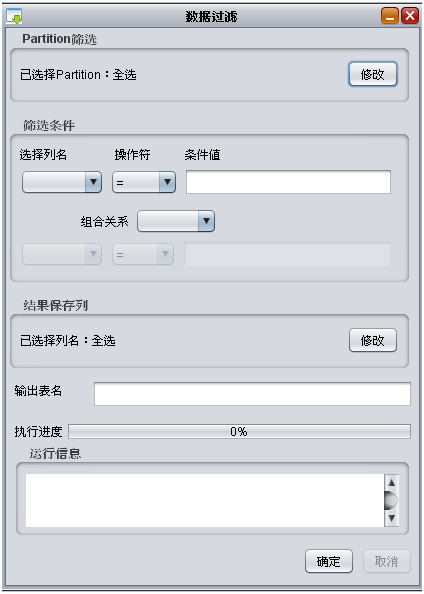窗体分为五部分，包括选择分区，筛选条件，结果保存列，输出表名和运行信息。
- 选择分区：如果不修改是全表，点击修改，出现下面界面，可以通过条件筛选或者勾选，最终以勾选结果确定选择的分区。
其中：
- 筛选条件：目前操作符支持”=”，”！=”，”>”,”<”, “>=”, “<=”和”like”
- 结果保存列：点击修改，选择数据过滤后希望留下的列名，用户可以选择列名后使用中间的按钮进行对于选中和未选中的列调整。如果没有点击修改，那么所有列都会被保存。
- 输出表名: 不存在的表名。
- 运行信息: 填写完以上信息之后，点击确定，程序开始运行之后，显示运行的进度和信息。
计算过程中可以点击取消按钮取消计算同时终止云端JOB。
任务完成后结果页面跳出，仍然以表格方式显示，对于结果各项操作同原数据表格，用户可以针对结果数据继续进行计算。
函数¶
def filter(inputTableName, filter, outTableName, inputPartitions = None, cols = None):
参数:
- inputTableName: 输入表名.
- outTableName: 输出表名.
- filter: 过滤条件.
- inputPartitions: (可选)输入表的分区列表.
- cols: (可选) 结果保存列，默认全选
返回:
outTableName的SummaryResultTable.
示例:
srt = DataProc.filter("bank_marketing", "age>30", "ning_test_k1")
连续变量分组¶
界面¶
如果想看一个变量多组过滤条件之间统计结果的对比，可以使用连续变量分组。统计对比->连续变量分组，输入条件列表，输入条件列表对应的输出表列表。如果有输出表列表，那么结果中包含过滤表。
以UCI上Bank Marketing数据集为例，将age字段分成小于等于30岁和大于30岁两组，考虑观察每组的balance字段的统计量以及balance字段统计量的对比。如下图：

点击确定，得到运行结果如下：
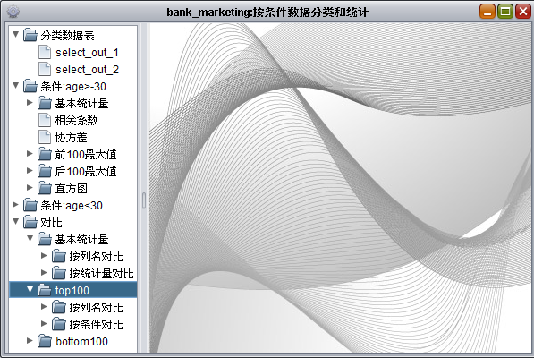这是个树状结构，左侧是数据表和条件列表，可以看到每个条件的统计量，以及所有条件直接的对比。 对比分为基本统计量的对比，top100的对比，bottom100的对比。 如果选定基本统计量按列对比的结果，行显示的是两个分类条件，列显示的是基本统计量。
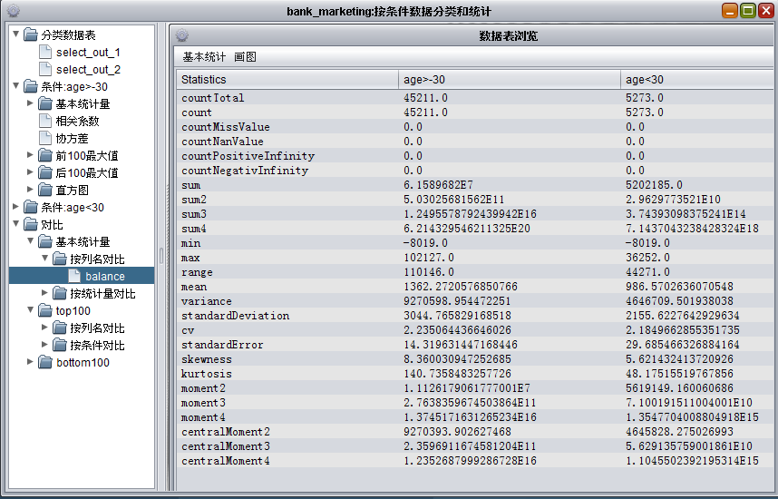如果选定基本统计量->按统计量对比->count, 那么结果显示的是所有分类条件和所有列的count值的对比。
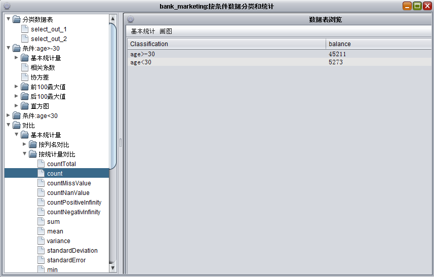注意事项: 如果选定基本统计量->按统计量对比->count, 那么结果显示的是所有分类条件和所有列的count值的对比。
函数¶
def select(inputTableName, by, outTableNames, inputPartitions = None, cols = None):
* inputTableName: 输入表名.
* by: 分组条件列表.
* outTableNames: 输出表名列表. 和by参数的个数相同.
* inputPartitions:(可选)表的分区列表.
* cols:(可选)需要计算的列名列表.
返回:
- 如果by=None, 或者by只有一个条件，返回SummaryResultTable.
- 否则返回SummaryResultTable 列表，其中每一个代表在filter条件下，by分组条件对应的summary结果.
示例:
[srt1, srt2] = DataProc.select("bank_marketing", ["age>30", "age<=30"], ["outTableName1", "outTableName2"])
唯一结果集¶
该操作类似数据库中的distinct功能，用以将数据对于若干列进行去重操作。
函数¶
def unique(inputTableName, outTableName, keyColNames = None):
参数：
- inputTableName: 输入表名.
- outTableName: 输出表名.
- keyColNames: (可选)取唯一结果的列，默认为全选.
示例:
DataProc.unique("bank_marketing","outTableName", keyColNames=["job", "age"])
前N条记录¶
该操作条件类似于排序功能，计算该数据按照条件排序后的前n条记录。
函数¶
def topn(inputTableName, N, outTableName, keyColNames=None, momotonicity=None):
参数：
- inputTableName: 输入表名.
- N：结果的记录个数.
- outTableName: 输出表名.
- keyColNames:(可选)求top的列， 默认为全选.
- momotonicity:(可选)排序规则，默认为升序, 其中”+”是升序， “-“是降序.
示例:
DataProc.topn("bank_marketing", 5, "outTableName", keyColNames=["age", "job"]，momotonicity=["+", "+"])
随机采样¶
该操作以随机方式生成采样数据。
界面¶
点击菜单：数据处理→采样→随机采样，显示参数窗体如下：
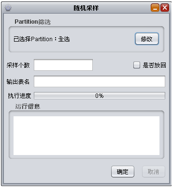用户可输入采样数，并选择该采样是否是放回采样。 参数选择完毕后点击确定进行计算，运行时候查看任务状态，任务中途取消和任务结束后结果数据的显示参照数据过滤功能。
函数¶
def randomSample(inputTableName, sampleSize, outTableName, replace=False, inputPartitions=None):
参数：
- inputTableName: 输入表名.
- outTableName: 输出表名.
- sampleSize：采样个数.
- replace：(可选)是否放回, 默认是不放回.
- inputPartitions: (可选)输入表的分区.
示例：
DataProc.Sample.randomSample("bank_marketing", 11, "outTableName")
加权采样¶
该操作以加权方式生成采样数据。
界面¶
点击菜单：数据处理→采样→随机采样，显示参数窗体如下：
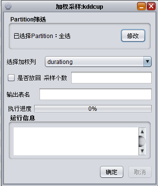用户可输入采样数，加权列，并选择该采样是否是放回采样。 参数选择完毕后点击确定进行计算，运行时候查看任务状态，任务中途取消和任务结束后结果数据的显示参照数据过滤功能。
函数¶
def weightedSample(inputTableName, sampleSize, probCol, outputTableName, replace=False, inputPartitions=None):
参数：
- inputTableName: 输入表名.
- outTableName: 输出表名.
- sampleSize：采样个数.
- probCol：加权列，每个值代表所在record出现的权重，不需要归一化.
- replace：(可选)是否放回, 默认是不放回.
- inputPartitions: (可选)输入表的分区.
示例：
DataProc.Sample.weightedSample("bank_marketing", 11, "age", "outputTable")
数据拆分¶
拆分把一个数据集按比例拆分成多个数据集。 支持两种模式的拆分，比例模式和K折模式。
- 比例模式是，把一个数据集按比例拆分成训练表，验证表和测试表。
- K折模式，是把数据集平均分成k分，输出到同一表的不同partition中。
界面¶
选择数据表adult，双击打开表>数据处理>拆分，如：
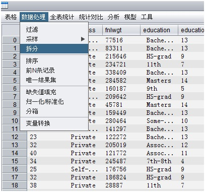单击拆分，如：
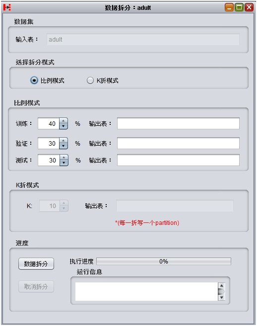可以选择两种拆分模式，比例模式和K折模式。
- 比例模式： 按照比例分别输出到三张表中， 其中概率和必须为100， 如果某个概率为0， 则不需填写输出表
- K折模式：把数据平均分成K分， 输出到同一张表的不同partition中， 其中partition的命名为K=N， N∈[1, k]
填写参数，单击”数据拆分”，即可运行程序：
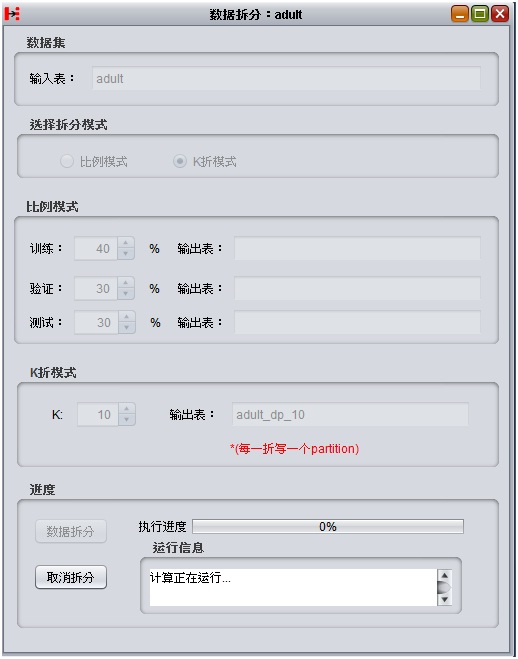运行成功，会自动弹出结果表：
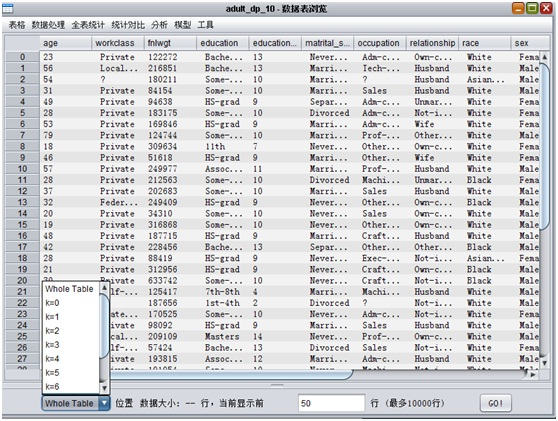函数¶
def declustering(inputTableName, factors, outputTableNames, outputPartitions=None):
- 参数:
- inputTableName： 输入普通表名,
- factors：拆分比例, double类型数组, 每个值范围(0,1), sum(factors) = 1
- outputTableNames：输出表名列表, outputTableNames和factors一一对应
- outputPartitions：输出表分区列表, 如果不输出到分区, 则分区为empty string’‘
示例：
DataProc.declustering('adult', [0.6,0.3,0.1], ['adult_train','adult_test','adult_validate'])
DataProc.declustering('adult', [0.3,0.3,0.4], ['adult_dp1','adult_dp2','adult_dp3'],
['pdate=20140318','pdate=20140319','pdate=20140320'])
追加ID列¶
在数据表第一列追加ID列
函数¶
def appendID(inputTableName, outputTableName, selectedColNames=None, IDColName=None)
- 参数:
- inputTableName： 输入普通表名
- outputTableName：输出表名列表
- selectedColNames：(可选)输入表选择列名类型，默认选择全部列
- IDColName：(可选)ID列列名, 默认为’append_id’, ID从0开始
示例：
DataProc.appendID('adult', 'adult_append_id', IDColName='ID' )
DataProc.appendID('adult', 'adult_append_id',selectedColNames=['age','workclass'],IDColName='ID')
多表列合并¶
将多个表按照列合并为一个表
函数¶
def appendColumns(inputTableNames, outputTableName, selectedColNamesList=None,
inputPartitionsInfoList=None, autoRenameCol=False, outputTableColNames=None, outputPartition=None)
- 参数:
- inputTableNames：输入表名
- outputTableName：输出表名
- selectedColNamesList：(可选)与输入表对应的选中列名列表(二维数组)，默认为全选
- inputPartitionsInfoList: (可选)与输入表对应的选中的partition列表(二维数组)，默认为全选
- autoRenameCol：(可选)输出表自动重定义列名，默认为不自动重定义
- outputTableColNames ：(可选)输出表自定义列名，默认不指定
- outputPartition：(可选)输出partition，默认为空
示例：
DataProc.appendColumns(['input_table1','input_table2'], 'output_table', autoRenameCol=True, outputPartition='p=1')
DataProc.appendColumns(['input_table1','input_table2'], 'output_table',selectedColNamesList=[['col0','col1'],['col3']])
DataProc.appendColumns(['input_table1','input_table2'], 'output_table',selectedColNamesList=[['col0','col1'],['col3']],
outputTableColNames=['new_col0','new_col1','new_col3'])
多表行合并¶
将多个表按照行合并为一个表
函数¶
def appendRows(inputTableNames, outputTableName, selectedColNamesList=None, inputPartitionsInfosList=None,
outputTableColNames=None, outputPartition=None)
- 参数:
- inputTableName： 输入表名
- outputTableName：输出表名
- selectedColNamesList：(可选)与输入表对应的选中列名列表(二维数组)，默认为全选
- inputPartitionsInfosList:(可选)与输入表对应的选中的partition列表(二维数组)，默认为全选
- outputTableColNames：(可选)输出表自定义列名，默认不指定
- outputPartition：(可选)输出partition，默认为空
示例：
DataProc.appendRows(['input_table1','input_table2'], 'output_table', outputPartition='p=1')
DataProc.appendRows(['input_table1','input_table2'], 'output_table',
selectedColNamesList=[['col0','col1'],['col2','col3']],outputTableColNames=['new_col0','new_col1'])
排序¶
数据按照自定义规则全排序
函数¶
def sort(inputTableName, outputTableName, selectedColNames=None, sortColRule=None)
- 参数:
- inputTableName： 输入表名
- outputTableName： 输出表名
- selectedColNames：(可选)输入表排序列名，默认选择全部列
- sortColRule： (可选)排序规则，长度必须和sectedColNames相等，+表示升序，-表示降序，默认升序
示例：
DataProc.sort('input', 'output')
DataProc.sort('input', 'output',selectedColNames=['col0','col1'],sortColRule=['+','-'])
信息值¶
目前InfoValue算法支持 属性列是连续类型, 目标列是二分类的计算
算法按N分划分数据, 计算信息增益, 基尼增益, 信息增益率, 信息值, 其中计算信息值的中间结果可以输出到WOE表中
公式：
WOE = Log(Distribution Good/Distribution Bad)
IV = {Σ(Dist Good – Dist Bad) x WOE}
界面¶
双击adult，菜单选择 分析>属性选择，如：
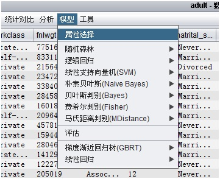
普通表的属性选择界面如下：
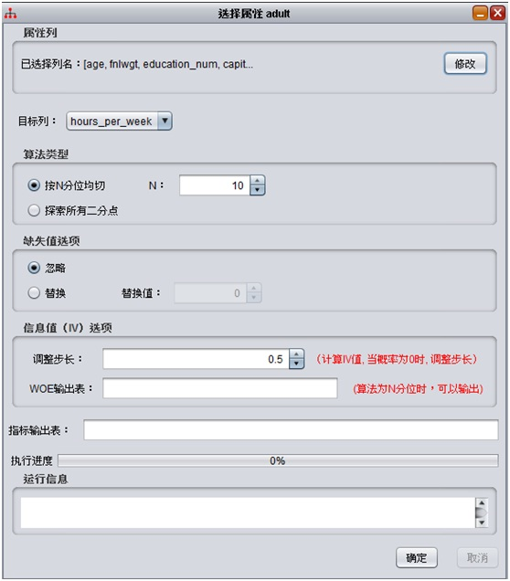其中：
- 选择属性列，默认选择数值列除去最后一列
- 选择目标列，默认选择数值列的最后一列
- 算法类型， 按N分位且 和 探索所有二分点
- 缺失值处理方式 忽略和替换，可以自定替换值
- 信息值IV选项， 调整步长，档概率为0是， 调整概率的大小
- WOE值输出表， 当算法类型是按N分位切，可以输出IV的计算过程
稠密矩阵的属性选择界面如下：
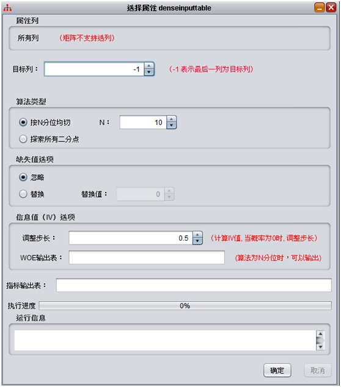其中：
- 选择属性列，稠密矩阵不支持选择
- 选择目标列，默认选择数值列的最后一列
- 算法类型， 按N分位且 和 探索所有二分点
- 缺失值处理方式 忽略和替换，可以自定替换值
- 信息值IV选项， 调整步长，档概率为0是， 调整概率的大小
- WOE值输出表， 当算法类型是按N分位切，可以输出IV的计算过程
填写完参数，单击确定：
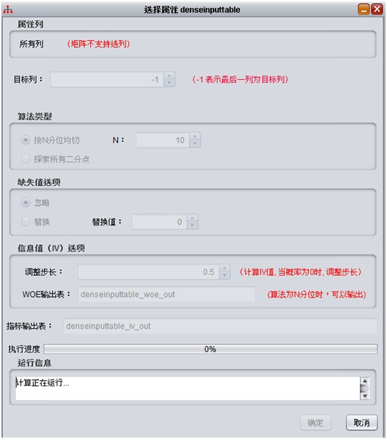
运行成功，自动弹出结果结果表，列说明：
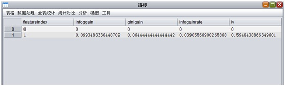
- featureindex：特征列序号
- infogain：信息增益
- ginigain：基尼增益
- infogainratio：信息增益率
- iv：信息值
Woe表,列说明：
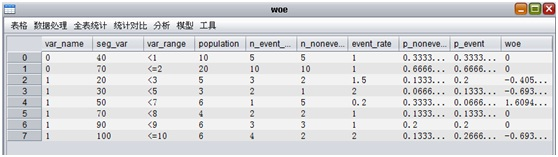
- Var_name：特征列序号
- Seg_var：分位点
- Var_range: 分位点对应的值
- Population：n_event_attr+ n_nonevent_attr
- n_event_attr： good的分布
- n_nonevent_attr： bad的分布
- event_rate: n_event_attr/ n_nonevent_attr
- p_nonevent ：n_nonevent_attr / Population
- p_event: n_event_attr/ Population
- woe: log(p_nonevent/ p_event);
函数¶
class InfoValue:
@staticmethod
def calc(inputTableName, labelColName, outputTableName, outputWOETableName="",
nDivide=10, missingType=0, missingReplace=0, filterType=0):
- 参数:
- inputTableName: 输入表名, 可以为普通表或稠密矩阵
- labelColName：目标列的索引或列名, 如果输入表为稠密表，则为列序号
- outputTableName： 输出表名.
- outputWOETableName: (可选)WOE输出表
- nDivide：(可选)每次计算数据被平均划分成N份, 取值(2,100]
- missingType: (可选)缺失值处理, 0表示忽略; 1 表示替换, 用missingReplace替换; 默认忽略缺失值
- missingReplace: (可选)如何missingType = 1, 起作用, 缺失值被替换成missingReplace
- filterType: (可选)过滤类型, 0 不忽略任何值; 1 忽略0值; 2: 忽略<=0的值
示例：
DataProc.InfoValue.calc("dshen1_tmall_new_test", "v2", "iv_output", "woe_output", 10, 1, 0.0, 2)
DataProc.InfoValue.calc("denseinputtable_2_group", 2, "denseinputtable_2_group_iv_output",
"denseinputtable_2_group_woe_output", 10, 1, 0.0, 2)
变量转换¶
变量转换可以根据数据表中已有变量参与条件表达式，根据需求生成新的变量。提供多种操作符与函数，可以较灵活的生成变量。
界面¶
选择数据表,点击数据处理→变量转换：

在右侧的可选列名与可选函数列表中选择变量与函数生成新的变量表达式，也可根据需要输入变量表达式内容,对新增变量命名后即可将其添加到下方的表达式列表部分。也可对表达式列表中的表达式进行编辑或删除。
- 新增变量名称：新增变量在结果表中的列名。
- 新增变量类型：新增变量的类型，如不指定则会自动判断。
- 新增变量表达式：根据列名和可选函数构成的表达式，只有合法的表达式才会被添加到下方的表达式列表部分。
- 输出表名：最终结果输出表。
- 保留原表所有列：勾选时在结果表中保留原表所有列，不勾选则不保留原表，只保留新增变量列。
运行结果： 变量转换会把输出结果表展示出来，如下图所示：
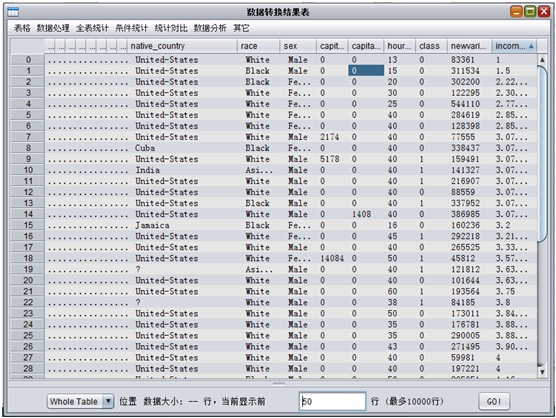函数¶
def transform(inputTableName, outputTableName, outputColNames, outputColExpressions,
inputPartitions = None, outputPartition = None, outputColTypes = None):
- 参数
- inputTableName： 输入普通表名
- outputTableName：输出表的表名
- outputColNames：输出表各列的列名
- outputColExpressions：产生输出表各列所用的表达式
- inputPartitions：(可选)输入数据所用的分区列表; 默认的None表示整个inputTableName表
- outputPartition：(可选)输出数据到分区；默认的None表示直接输出到表
- outputColTypes：(可选)输出表各列的列类型; 默认为None，会自动推测;列表中可以填写的类型为：boolean|bigint|double|string|datetime;
示例:
DataProc.transform('bank_full', 'str_label_bank_full', ['str_label'], ['case when label==1 then "yes" else "no" end'])
缺失值填充¶
通过给定一个缺失值的配置列表，来实现将输入表的缺失值，用指定的值来填充。
界面¶
双击数据表adult，菜单栏选择 数据处理->缺失值填充，如：
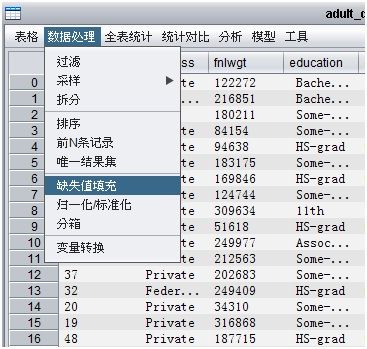单击缺失值填充，如：
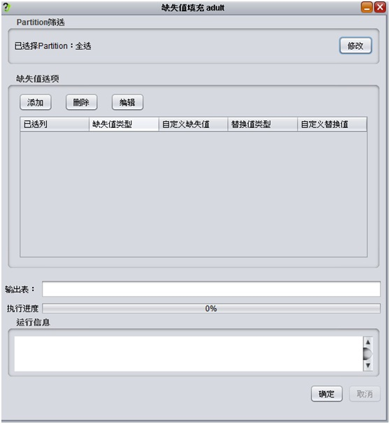单击添加按钮：
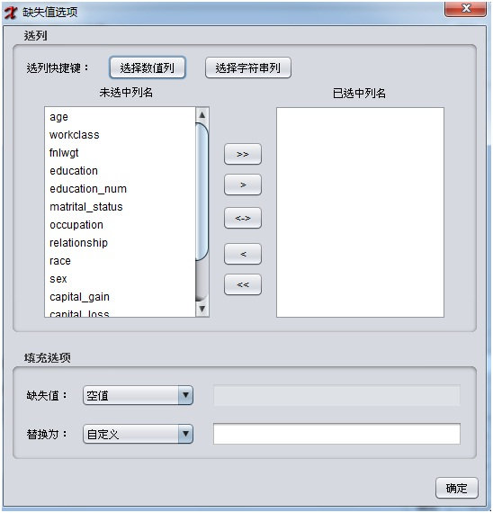其中：
- 选列快捷键，可以快速选择数值列(double|long)或字符串列
- 选择数值列，支持多选
- 选择缺失值，缺失值支持四种类型， 分别为空值，空字符串，空值和空字符串，自定义。
- 选择替换值，替换值对于字符串支持自定义，数值型(double和long)支持最大值和最小值替换， double类型还支持均值替换
填写完参数后，单击”确定”按钮， 新增加的记录如下：
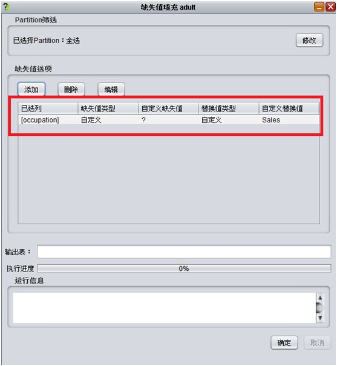选中刚才添加的记录，单击”编辑”按钮显示如：
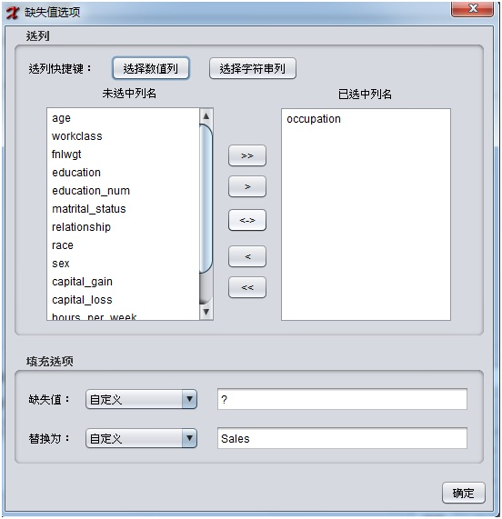替换值更换为”Other-service”, 单击”确定按钮”，如：
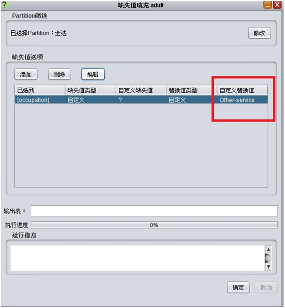选中记录，单击删除按钮，即可删除不需要的记录。填写输出表名，单击确定：
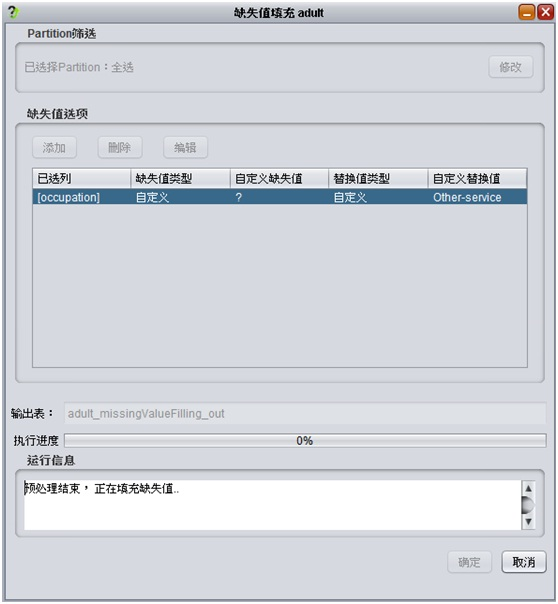运行成功，自动弹出结果表：
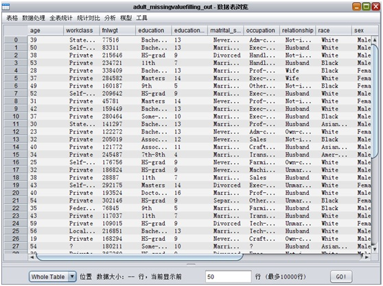函数¶
def fillMissingValues(inputTableName, outputTableName, configs, \
inputPartitions = None, outputPartition = None):
- 参数:
- inputTableName: 输入数据的表名
- outputTableName: 输出表的表名
- configs: 缺失值填充的配置，格式如：[(‘col1’, ‘null’, ‘3.14’), (‘col3’, ‘empty’, ‘hello’), (‘col4’, ‘null-empty’, ‘xlab’), (‘col8’, ‘user-defined’, ‘?’, ‘world’)]
- inputPartitions: (可选)输入数据所用的分区列表；默认为None，表示整个inputTableName表；如：[‘ds=20140320’, ‘ds=20140321’]
- outputPartition: (可选)输出数据到分区；默认为None，表示直接输出到表；如：’ds=20140322’
示例：
## 将表 table_a 的 feature1 列的 NULL，用 3.14 填充
configs = [('feature1', 'null', '3.14')]
DataProc.fillMissingValues('table_a', 'table_b', configs)
例2：
## 将表 table_a 的 feature3 列的 空字符串，用 'hello' 填充
configs = [('feature3', 'empty', 'hello')]
DataProc.fillMissingValues('table_a', 'table_b', configs)
例3：
## 将表 table_a 的 feature4 列的 NULL或者空字符串，用字符串 'xlab' 填充
configs = [('feature4', 'null-empty', '3.14')]
DataProc.fillMissingValues('table_a', 'table_b', configs)
例4：
## 将表 table_a 的 feature8 列的 '?'，用 'world' 填充
configs = [('feature8', 'user-defined', '?', 'world')]
DataProc.fillMissingValues('table_a', 'table_b', configs)
例5：
## 将表 table_a 的 feature9 列(datetime类型)的 NULL，用 "2014-03-23 08:13:54" 填充，
## 注意这里的日期类型的字符串格式
configs = [('feature9', 'null', '2014-03-23 08:13:54')]
DataProc.fillMissingValues('table_a', 'table_b', configs)
归一化¶
界面¶
双击数据表adult，菜单栏选择 数据处理->归一化/标准化，如：
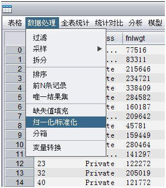
单击归一化/标准化，打开界面：
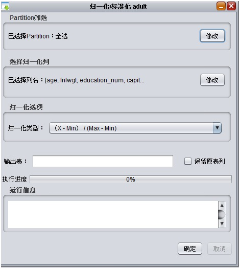
其中：
- 选择paritition，默认整个表
- 选择列，默认选择所有的数值列(double|long类型)
- 归一化的类型， 一个是归一化，一个是标准化
- 填写输出表
- 选择是否标有归一化的原有列， 否输出：非归一化+归一化结果列，是：原表列+归一化结果列
填写完参数，单击”确定”：
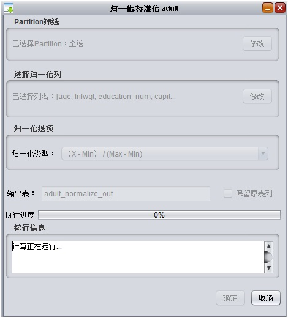运行完成后，自动弹出结果表：
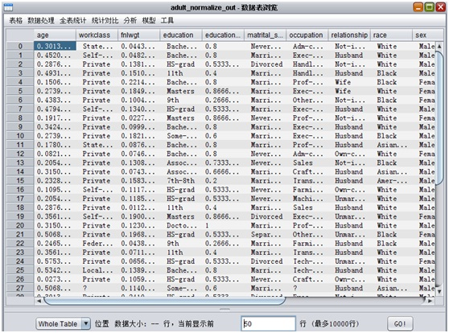函数¶
def normalize(inputTableName, outputTableName, \
inputPartitions = None, selectedColNames = None, outputPartition = None):
- 参数:
- inputTableName: 输入数据的表名
- outputTableName: 输出表的表名
- inputPartitions: (可选)输入数据所用的分区列表；默认为None，表示整个inputTableName表；如：[‘ds=20140320’, ‘ds=20140321’]
- selectedColNames: (可选)要归一化的列名列表；默认为None，将表中所有bigint列和double列归一化；如：[‘col1’, ‘col2’]
- outputPartition: (可选)输出数据到分区；默认为None，表示直接输出到表；如：’ds=20140322’
示例：
## 将表 bank_full 的所有bigint类型和double类型列，都归一化
DataProc.normalize('bank_full', 'normalized_bank_full')
## 也可以选定列，进行归一化
DataProc.normalize('bank_full', 'standardize_bank_full', selectedColNames = ['f0','f1','f2','f3'])
标准化¶
函数¶
standardize(inputTableName, outputTableName, \
inputPartitions = None, selectedColNames = None, outputPartition = None):
- 参数：
- inputTableName: 输入数据的表名
- outputTableName: 输出表的表名
- inputPartitions: (可选)输入数据所用的分区列表；默认为None，表示整个inputTableName表；如：[‘ds=20140320’, ‘ds=20140321’]
- selectedColNames: (可选)要标准化的列名列表；默认为None，将表中所有bigint列和double列标准化；如：[‘col1’, ‘col2’]
- outputPartition: (可选)输出数据到分区；默认为None，表示直接输出到表；如：’ds=20140322’
示例：
## 将表 bank_full 的所有bigint类型和double类型列，都标准化
DataProc.standardize('bank_full', 'standardize_bank_full')
## 也可以选定列，进行标准化
DataProc.standardize('bank_full', 'standardize_bank_full', selectedColNames =['f0','f1','f2','f3'])
分箱¶
分箱有三种方式：等距分箱，等量分箱，均值/标准差分箱
界面¶
双击数据表adult，菜单栏选择 数据处理->分箱，如：
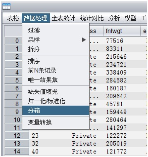单击分箱，如：
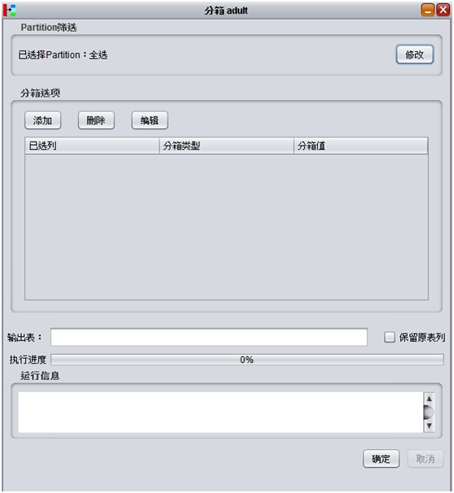单击添加按钮：
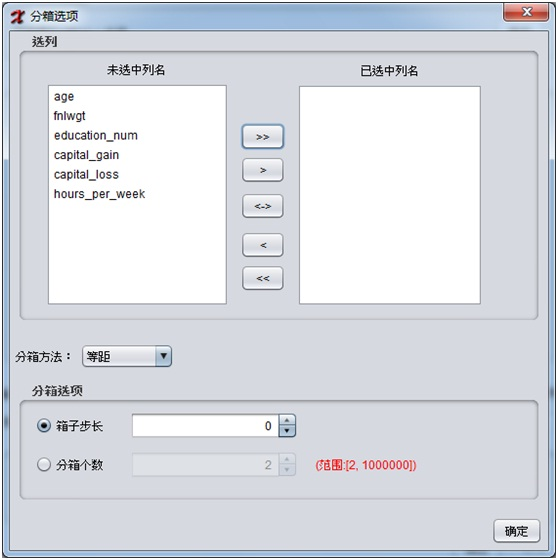其中：
- 选择数值列，支持多选，默认显示所有数值列
- 分箱方法，等距，等量，均值/标准差
- 等距分箱下，可以选择箱子步长或分箱个数
- 等量分箱下，可以选择记录数或分箱个数
- 均值/标准差，可以选择 +/- 1标准差， +/- 2标准差，+/- 3标准差，
填写完参数后，单击”确定”按钮， 新增加的记录如下：
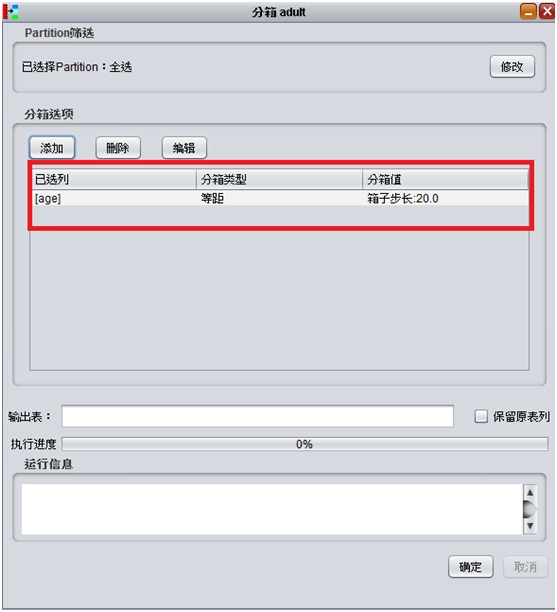选中刚才添加的记录，单击”编辑”按钮显示如：
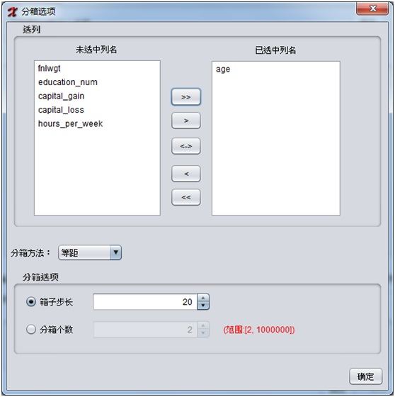将箱子步长设置为21, 单击”确定按钮”，如：
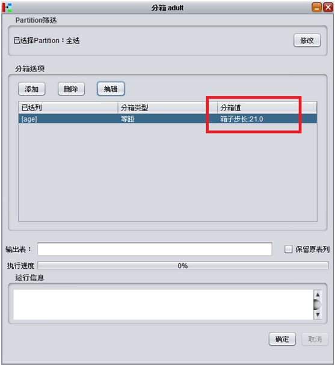选中记录，单击删除按钮，即可删除不需要的记录。填写输出表明，单击确定：
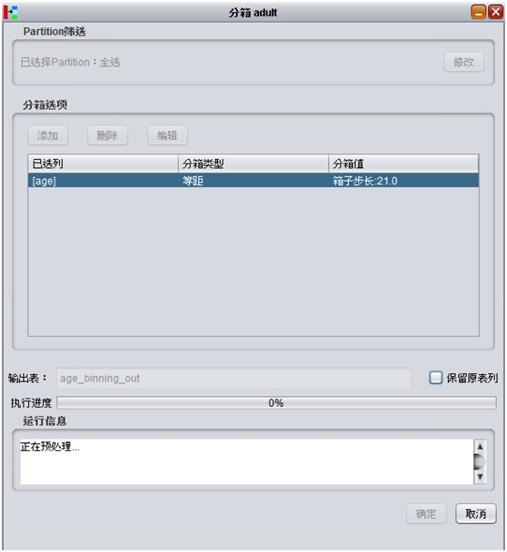运行成功，自动弹出结果表：
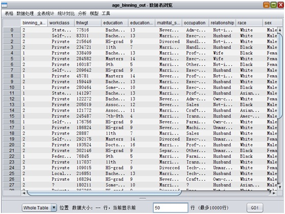函数¶
def binning(inputTableName, outputTableName, configs, \
inputPartitions = None, outputPartition = None, isKeepOriginalCol = False):
- 参数:
- inputTableName: 输入数据的表名
- outputTableName: 输出表的表名
- configs: 分箱配置，
- 等距分箱格式：(列名，fixed-width，bin-num(分箱个数)/bin-width(箱子宽度)，值), 如：[(‘col1’,’fixed-width’,’bin-num’,‘10’),(‘col2’,’fixed-width’,’bin-width’,‘10.50’)]
- 等量分箱格式：(列名，equal-count，bin-num(分箱个数)/record-count(记录数)，值), 如：[(‘col1’,’equal-count’,’bin-num’,‘10’),(‘col2’,’equal-count’,’record-count’,‘10000’)]
- 均值/标准差分箱格式： (列名，mean/std，sd1(+/- 1标准差)/ sd2(+/- 2标准差)/ sd3(+/- 3标准差)), 如: [(‘col1’,’mean/std’, ‘std1’),(‘col2’,’mean/std’, ‘std2’),(‘col3’,’mean/std’, ‘std2’)]
- inputPartitions: (可选)输入数据所用的分区列表；默认为None，表示整个inputTableName表；如：[‘ds=20140320’, ‘ds=20140321’]
- outputPartition: (可选)输出数据到分区；默认为None，表示直接输出到表；如：’ds=20140322’
- isKeepOriginalCol: (可选)是否保持分箱列的原有列，默认False
示例：
## 将表 adult 的 age列等距分箱且箱子数3个， capital_gain列等量分箱且记录数为1000， hours_per_week列均值/标准差分箱且使用(+/- 1标准差)
configs=[('age','fixed-width','bin-num','3'),('capital_gain','equal-count','record-count','1000'),
('hours_per_week','mean/std', 'std1')]
DataProc.binning('adult', 'adult_binning_out', configs)
数据生成¶
可以生成均匀分布，高斯分布，泊松分布，集合和表达式类型的数据。其中集合指的是给出确定的一个数据集和对应权重的权重，生成这个集合内的数据，数据的个数服从给出的权重。表达式类型指的是使用xlib表达式，其中加入了#row和#col这两个常量。#row表示数据的当前行号，#col表示数据的当前列号。列名不指定的情况下服从col0, col1…的规则。可以生成表，矩阵。
函数¶
def randomTable(outputTableName, rows, cols, outputPartition = None, colNames = None, colConfs = None) :
- 参数：
- outputTableName: 输出表名。
- rows: 生成表的行数。
- cols: 生成表的列数。
- outputPartition: (可选)输出分区名。默认为无分区。
- colNames: (可选)输出表的列名。默认为[‘col0’, ‘col1’...]。
- colConfs: (可选)输出表的列分布。默认为[0.0, 1.0)均匀分布。
本参数使用key-value来表示列分布，支持的参数有：
{'method':'uniform', 'param':'0.0, 2.0'} 表示[0.0, 2.0)的均匀分布。
{'method':'uniform_open', 'param':'0.0, 2.0'} 表示[0.0, 2.0]的均匀分布。
{'method':'gauss', 'param':'0.0, 2.0'} 表示均值为0.0, 方差为2.0的高斯分布。
{'method':'poisson', 'param':'2.0'} 表示λ为2.0的泊松分布。
{'method':'weight_set', 'param':'0.0, 2.0, 1.0, 2.0'} 表示0.0和1.0的集合，权重分别为2.0和2.0。
{'method':'function', 'param':'#col0 + 1'} 表示本列的值为col0列加1。
如果要指定空值的比例，则用如下形式：
{'method':'uniform', 'param':'0.0, 2.0', 'null_per' = '0.1'}
如果要指定列的类型，则用如下形式：
{'method':'uniform', 'param':'0.0, 2.0', 'null_per' = '0.1', 'type' = 'string'}
示例:
DataGenerator.randomTable('output_table_name', 1000, 6, outputPartition = 'p=1',
colNames = ['col0', 'col1', 'col2', 'col3', 'col4', 'col5'],
colConfs = [{'method':'uniform', 'param':'0.0, 2.0'},
{'method':'uniform_open', 'param':'0.0, 2.0'},
{'method':'gauss', 'param':'0.0, 2.0'},
{'method':'poisson', 'param':'2.0'},
{'method':'weight_set', 'param':'0.0, 2.0, 1.0, 2.0'},
{'method':'function', 'param':'#col0 + 1'}])
def randomDense(outputMatrixName, rows, cols, colConf = None) :
- 参数：
outputMatrixName: 输出稠密矩阵名。
rows: 生成稠密矩阵的行数。
cols: 生成稠密矩阵的列数。
colConf: (可选)输出矩阵的分布。默认为[0.0, 1.0)均匀分布。
本参数使用key-value来表示列分布，支持的参数有：
{'method':'uniform', 'param':'0.0, 2.0'} 表示[0.0, 2.0)的均匀分布。
{'method':'uniform_open', 'param':'0.0, 2.0'} 表示[0.0, 2.0]的均匀分布。
{'method':'gauss', 'param':'0.0, 2.0'} 表示均值为0.0, 方差为2.0的高斯分布。
{'method':'poisson', 'param':'2.0'} 表示λ为2.0的泊松分布。
{'method':'weight_set', 'param':'0.0, 2.0, 1.0, 2.0'} 表示0.0和1.0的集合，权重分别为2.0和2.0。
示例:
DataGenerator.randomDense('output_matrix_name', 1000, 6,
colConf = {'method':'uniform', 'param':'0.0, 2.0'})
def randomSparse(outputMatrixName, rows, cols, nonZero, colConf = None) :
- 参数：
- outputMatrixName: 输出 Xlib稀疏矩阵表 名。
- rows: 生成稀疏矩阵的行数。
- cols: 生成稀疏矩阵的列数。
- nonZero: 生成稀疏矩阵的非零元个数。
- colConfs: (可选)输出矩阵的分布。默认为[0.0, 1.0)均匀分布。本参数使用key-value来表示列分布，支持的参数有：
{'method':'uniform', 'param':'0.0, 2.0'} 表示[0.0, 2.0)的均匀分布。
{'method':'uniform_open', 'param':'0.0, 2.0'} 表示[0.0, 2.0]的均匀分布。
{'method':'gauss', 'param':'0.0, 2.0'} 表示均值为0.0, 方差为2.0的高斯分布。
{'method':'poisson', 'param':'2.0'} 表示λ为2.0的泊松分布。
{'method':'weight_set', 'param':'0.0, 2.0, 1.0, 2.0'} 表示0.0和1.0的集合，权重分别为2.0和2.0。
示例:
DataGenerator.randomSparse('output_matrix_name', 1000, 6, 1000,
colConf = {'method':'uniform', 'param':'0.0, 2.0'})
{kind=link}
{kind=link}
{kind=link}